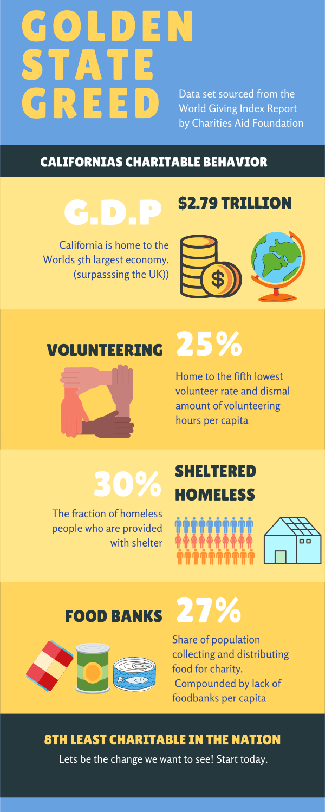

Win | Win
A Mobile App to connect helpers to their purpose
California

Data from World Giving Index
The state “ranked dead last for volunteering. Some of the reasons for this include the fifth lowest volunteer rate — about 25 percent, a small number of volunteer hours per capita, as well as a low share of residents who do favors for their neighbors, 46 percent,” says WalletHub analyst Jill Gonzalez. “Adding to this, the state also has a low share of population collecting and distributing food for charity, just 27 percent,"
Tools Used For This Project


Dale Crockwell
Contact eladcrock@gmail.com